Unreal Specific FaceFX Nodes
Overview
There are two FaceFX node types specific to the Unreal integration. Other FaceFX documentation does not reference how to use these nodes, so this document demonstrates their features. The node types are: FUnrealFaceFXMaterialParameterNode and FUnrealFaceFXMorphNode.
Creating the FUnrealFaceFXMaterialParameterNode
Material Parameter nodes can be used to create normal map animations for very realistic facial animations. In this example, we will simply make Slade's texture turn red. Go to the Face Graph tab, right click in the Face Graph, and select Add Node -> FUnrealFaceFXMaterialParameterNode. Call the node Face_Red_MaterialScalarParameter.
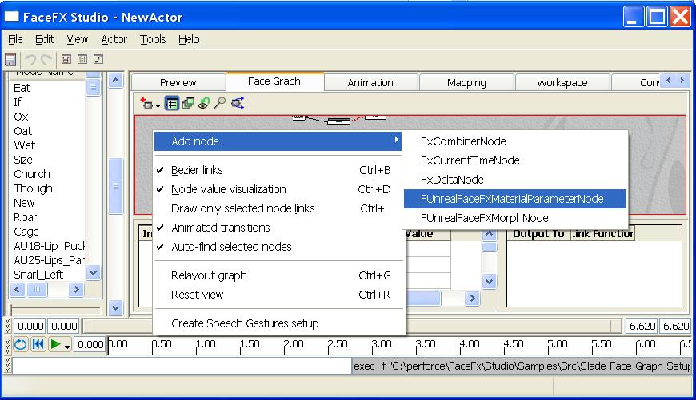
You will notice that the node has all of the same funtionality as a combiner node, but it also has a few extra properties: Material_Slot_Id and Parameter_Name. You can modify these properties by selecting the node in the Face Graph and editing the Face Graph node properties.
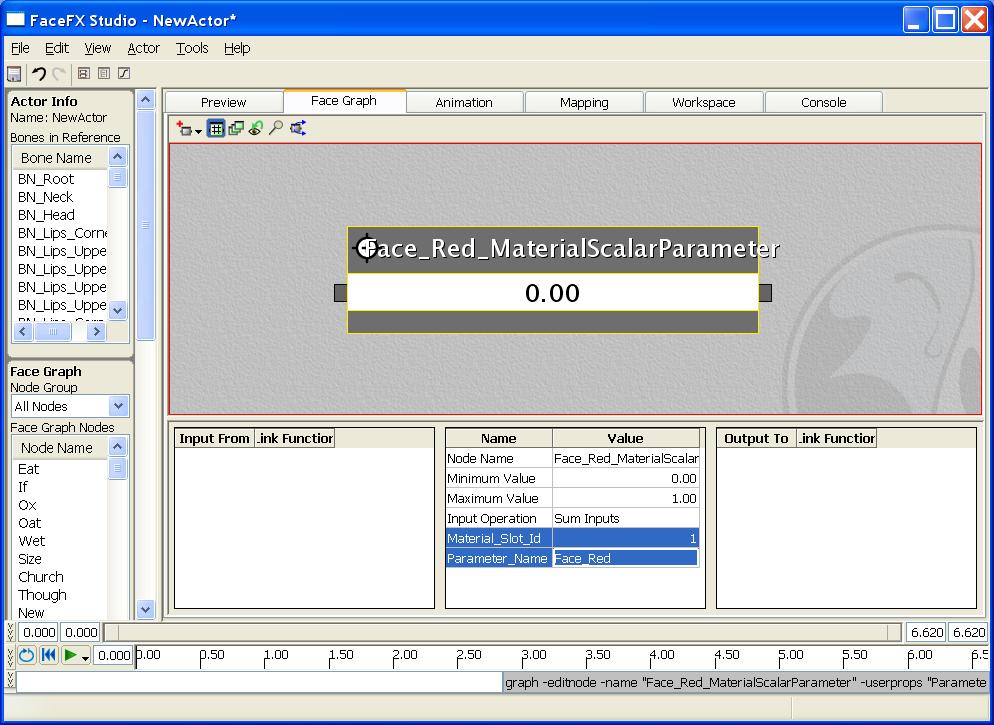
Modify the Material_Slot_Id
The Material_Slot_Id references the material slot we want to animate. In this case we are modifying Slade's main texture which resides in Material slot 1. To view your skeletal mesh's material slots, open the AnimSet Viewer by double clicking on the skeletal mesh and go to the Mesh tab on the right. We want our new Face Graph node to reference Material slot 1, so type "1" into the Material_Slot_Id property in the Face Graph with the newly created FUnrealFaceFXMaterialParameterNode selected. Hit enter.
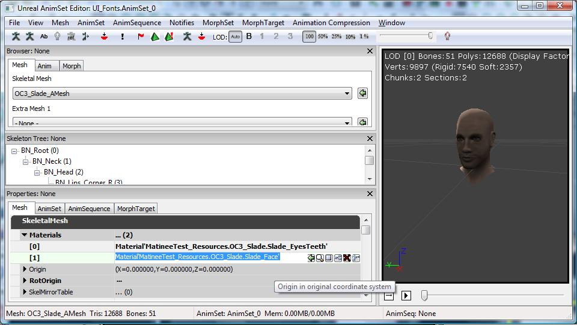
Modify the Parameter_Name
To make the face turn red, start by making a Scalar parameter called Face_Red that changes the Emissive channel of the texture. To drive this Scalar parameter from FaceFX, Type "Face_Red" into the Parameter_Name property in the Face Graph with the newly created FUnrealFaceFXMaterialParameterNode selected. Hit enter.
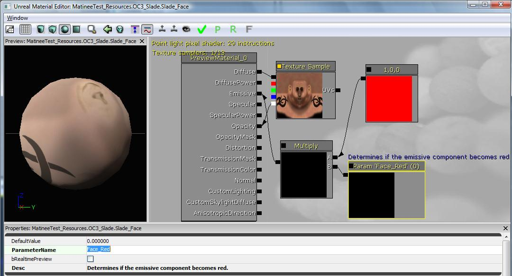
Creating the FUnrealFaceFXMorphNode
Before you will be able to preview morph targets in FaceFX Studio, you will need to set up the PreviewMorphSets in the FaceFXAsset. Right click the FaceFXAsset in the Generic Browser and select "Properties..." Select the morph target sets you would like to use for previewing just as you do in the AnimTree Editor.
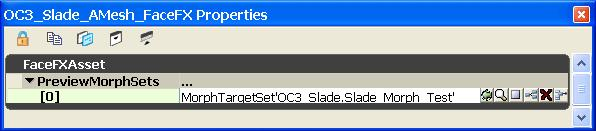
To create the morph node, right-click in the Face Graph and select Add Node -> FUnrealFaceFXMorphNode. Call the node Slade_Egghead_MorphTarget. Morph target nodes only have one additional parameter: Target_Name.
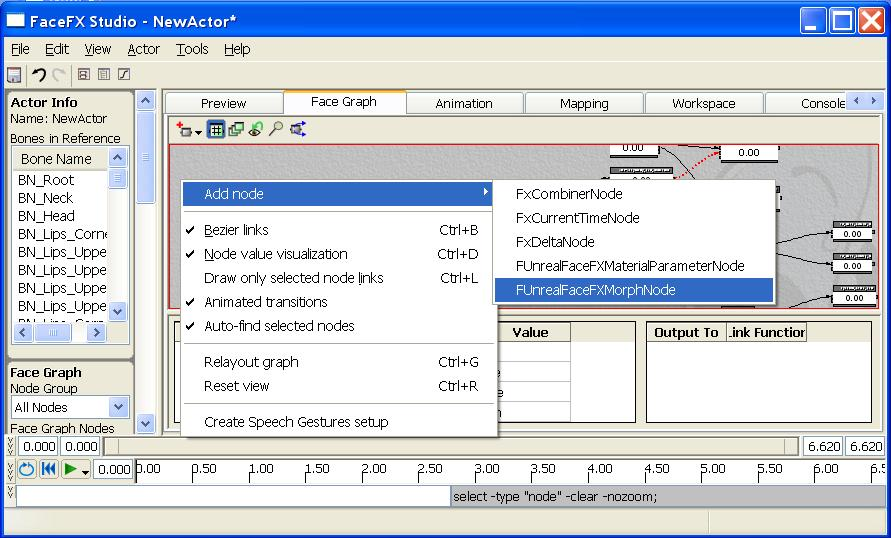
Modify the Target_Name
For morph target nodes, you only need to specify the name of the morph target you want to drive. In this case, type Slade_Egghead into the Target_Name property in the Face Graph with the newly created FUnrealFaceFXMorphNode selected.
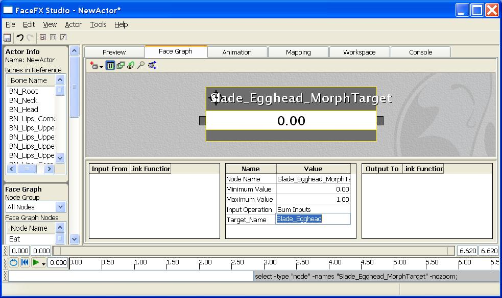
Animating the Unreal-specific Nodes
To see our newly created nodes in action, we are going to create a combiner node that drives both Unreal-specific nodes simultaneously. To do this, first put the application into "Create Combiner" mode. Go to the Workspace Tab, and select "Create Combiner" from the list.
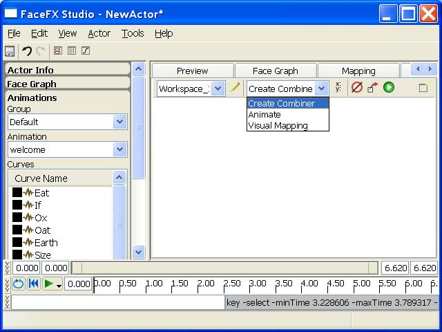
Now go to the Preview tab in FaceFX and open the "Face Graph" section of the Actor Panel on the left. Make sure the "Node Group" selected at the top of the "Face Graph" section is All Nodes. You should be able to scroll down to the bottom of the list and see the newly created Unreal-specific nodes. Or you can sort the list of nodes and find them by name. You can use the quick preview slider below the list of nodes to drive the targets. First drive the face_Red_MaterialScalerParameter.
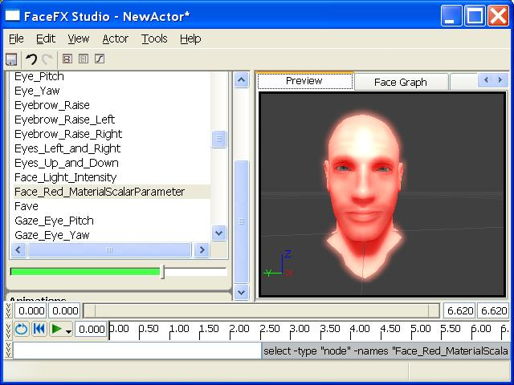
Next select the Slade_Egghead_MorphTarget from the "Face Graph" section of the Actor Panel. Drive it's node value up. Now both nodes have values.
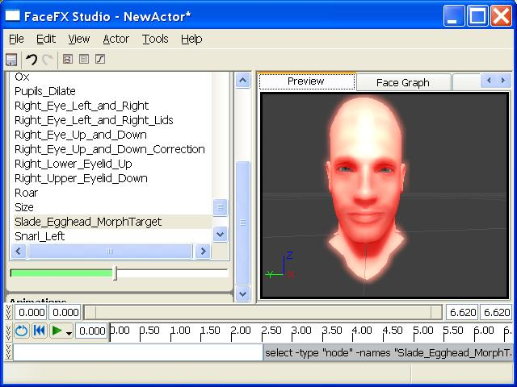
Finally, go back to the Workspace tab, and click on the "Create Combiner Node From Sliders" button. This will bring up the "Create Face Graph Node" dialog. Change the name of the new node to "Unreal_Red_Egghead", then hit the Create button. This will create a new combiner node in the face graph that drives both Unreal nodes simultaneously. You can also modify the Face Graph directly from the Face Graph Tab, but using the quick preview slider allows for a more visual creation process.
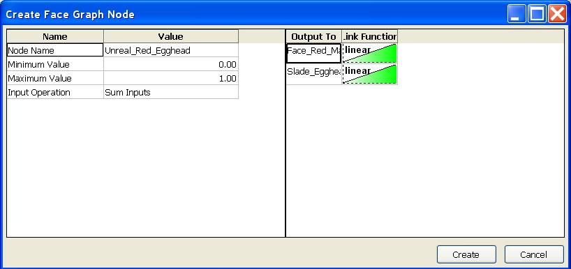
Important!
You are viewing documentation for the Unreal Development Kit (UDK).
If you are looking for the Unreal Engine 4 documentation, please visit the Unreal Engine 4 Documentation site.